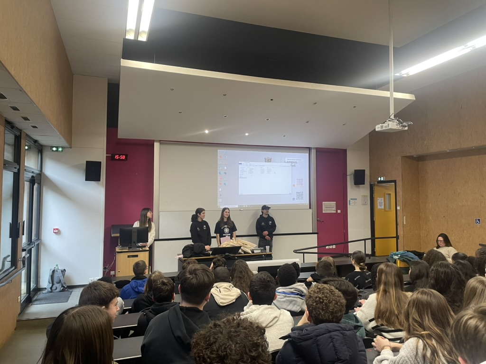

Nous avons été chargé de donner des cours d'Excel et de Dataviz à des collégiens, dans le but de les faire participer à un challenge Dataviz avec une classe de seconde.
Pour chaque séance, mon équipe et moi avons produis un support de cours, ainsi que des exercices à réaliser. L'objectif était à chaque cours de le faire découvrir les étapes de la création de la Dataviz, c'est à dire préparer les données et les visualiser avec des graphiques. Nous avons essayé de rendre les cours ludiques en utilisant Kahoot.
Le travail en groupe n'est pas toujours facile, car il faut s'accorder sur les sujets à aborder et la manière de le faire. De plus, il faut s'assurer que chaque membre du groupe participe au projet. Préparer un cours demande beaucoup de temps, car il faut s'assurer que le contenu est adapté au niveau des collégiens.
J'ai obtenu les notes de 16/20 aux deux semestres.
J'ai appris à créer des supports de cours, à les adapter au niveau des élèves et à les rendre ludiques. J'ai également appris à travailler en groupe et à m'organiser pour préparer un cours.